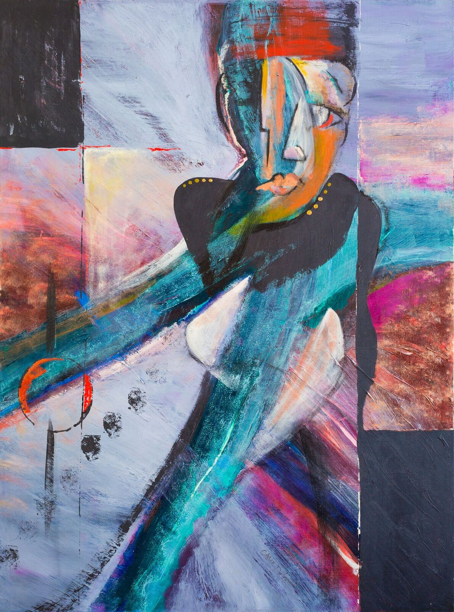
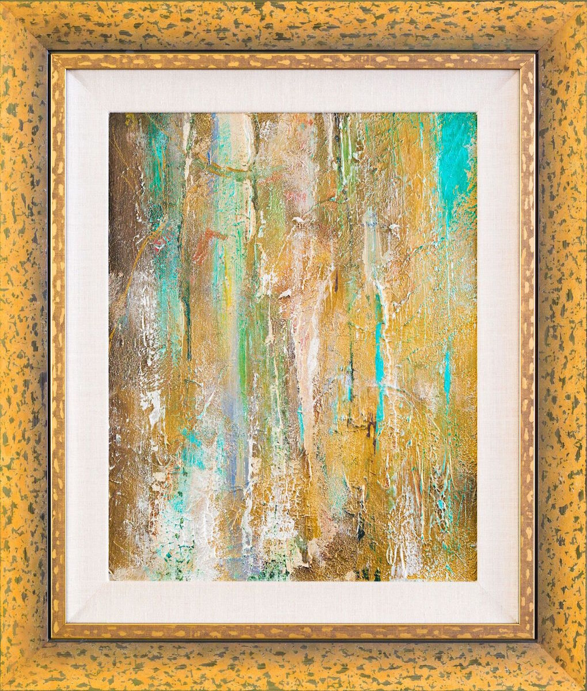
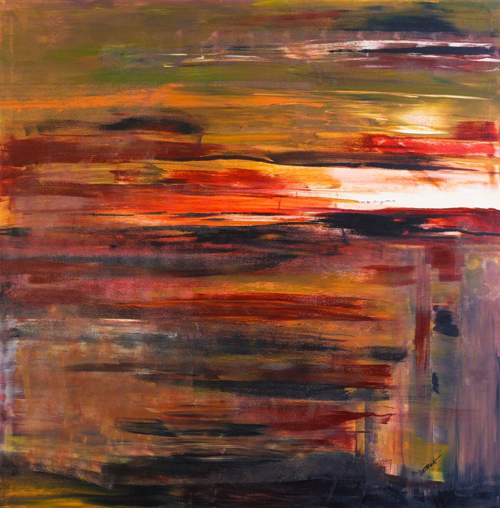
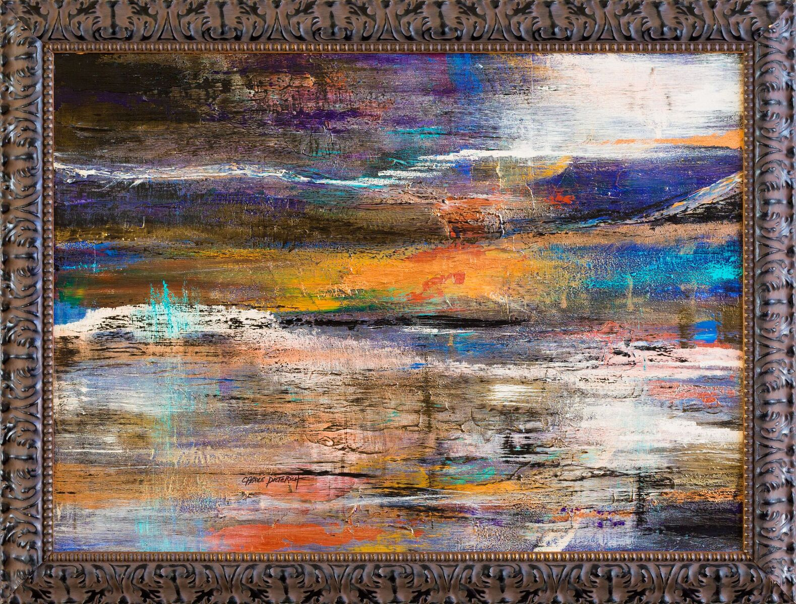
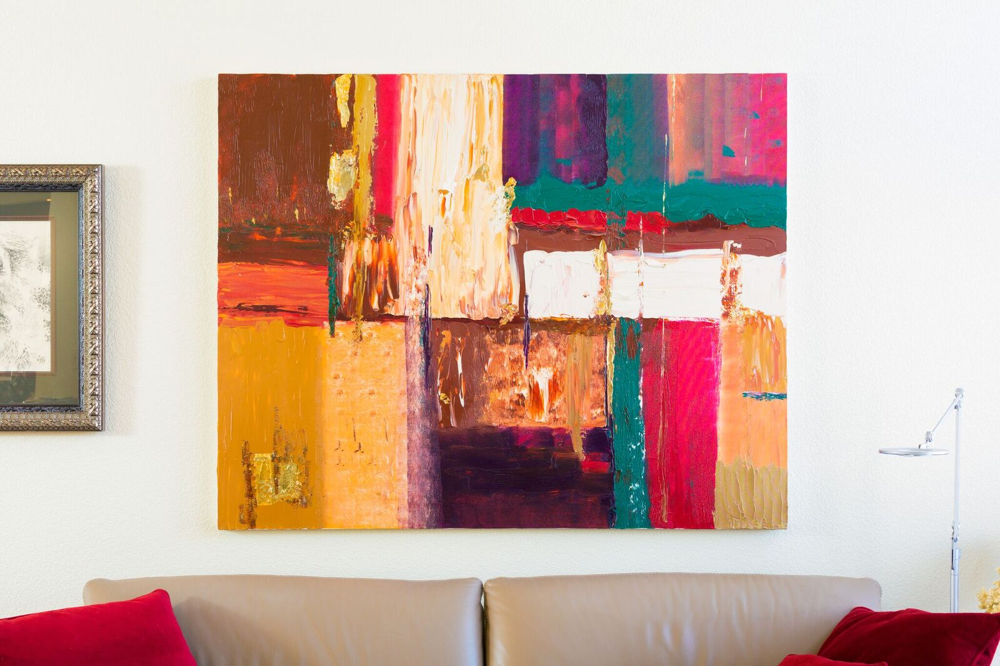

Carole feels as if she has lived many lives, always an artist, but taking different twists and turns. She was always the one who loved art most in school, minored in art at Indiana University, taught art in elementary schools, adult education, and was part of an art gallery/studio concept in Littleton, Colorado as well as helping with her sons’ art programs in their elementary schools as a volunteer. She became a realtor and helped people with remodeling concepts, had fix and flip clients, had fun designing brochures to keep her creative thoughts flowing. Upon retiring from real estate, she is now going back to her “roots” and is designing original abstract paintings currently as an abstract expressionist. Carole’s works range from detailed botanical illustrations, landscapes, portraits and figure work to large abstract acrylic work. She grew up in northern Indiana and moved to Colorado in 1972, after college, where she lives with her husband, Jim, of 39 years. She has two sons, Todd and Tyler, who also live in the Denver area.